CIVICTECH.TW · 建置成果分享
想改變的事，
已經有人在做
台灣公民科技資料庫，這一年做了什麼
你有沒有想過，
政府預算花到哪裡去了？
2012 年，一個預算網站
把幾千億，
變成看得懂的泡泡
- 每個泡泡是一筆預算
- 金額換算成便當、珍奶
- 看不懂？按一下「表示不懂」
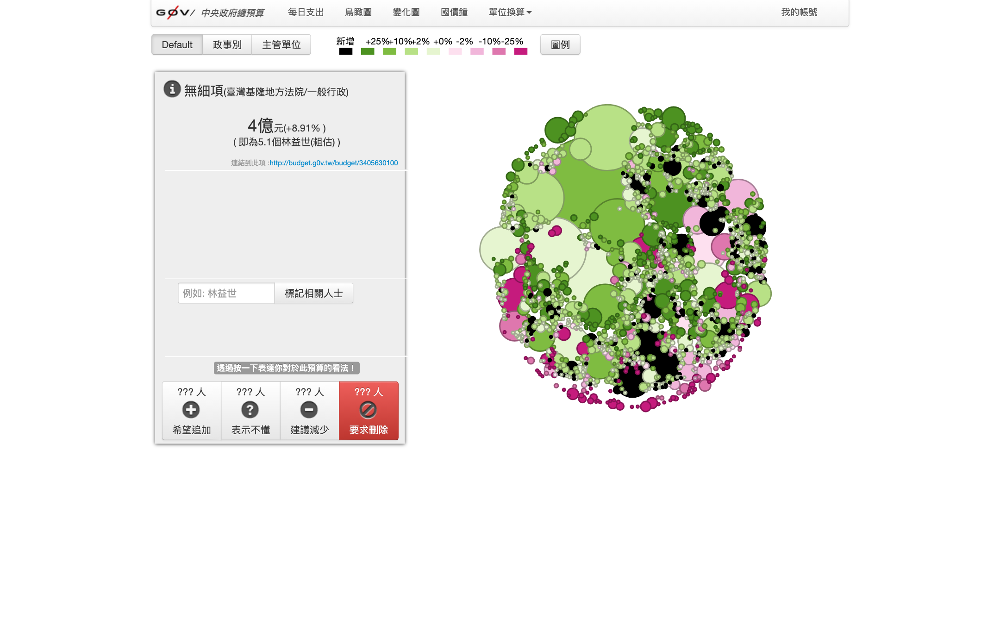
專案沒有停在 2012
從中央，
擴散到地方
- 預算視覺化產生器：一套工具，做出好幾個縣市的版本
- 政府預算查詢平台：各縣市預算、互相比較、下載資料
- 資料不齊，就邀議員一起補
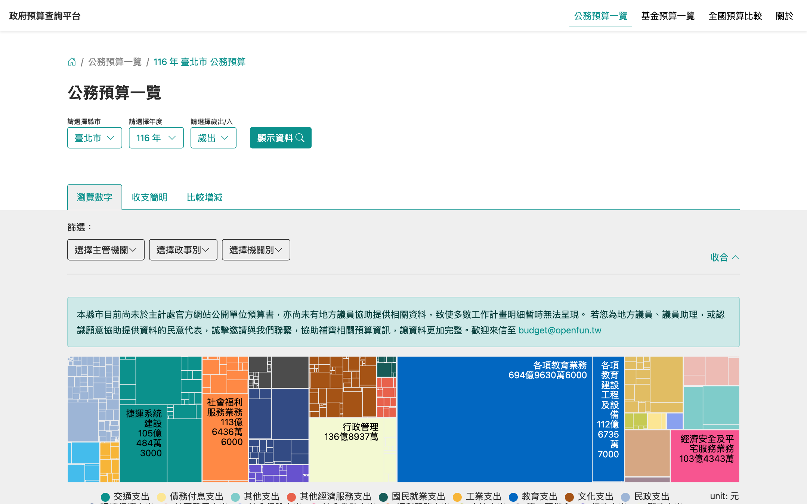
資料打開之後，一路長出來的
一個問題，接著下一個問題
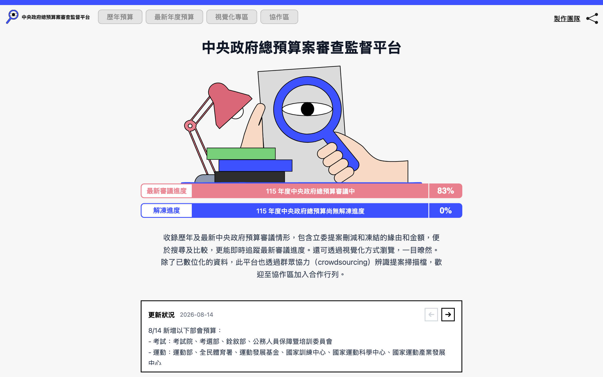
預算怎麼被審？
總預算案審查監督平台
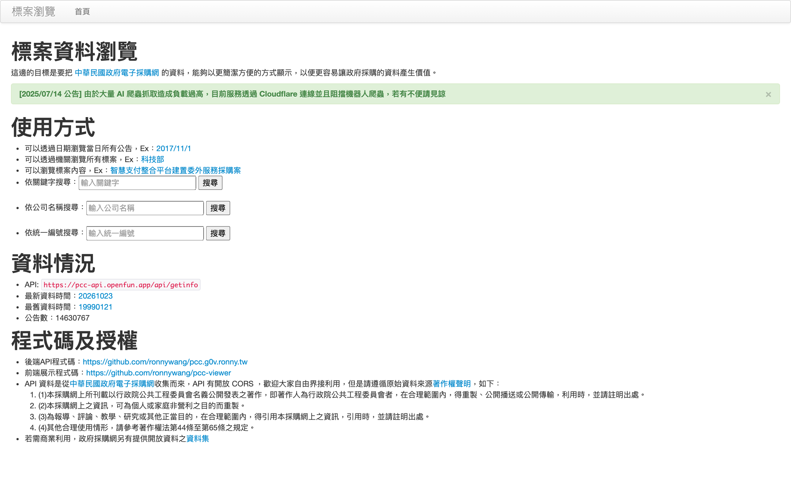
錢發給了誰？
標案資料瀏覽
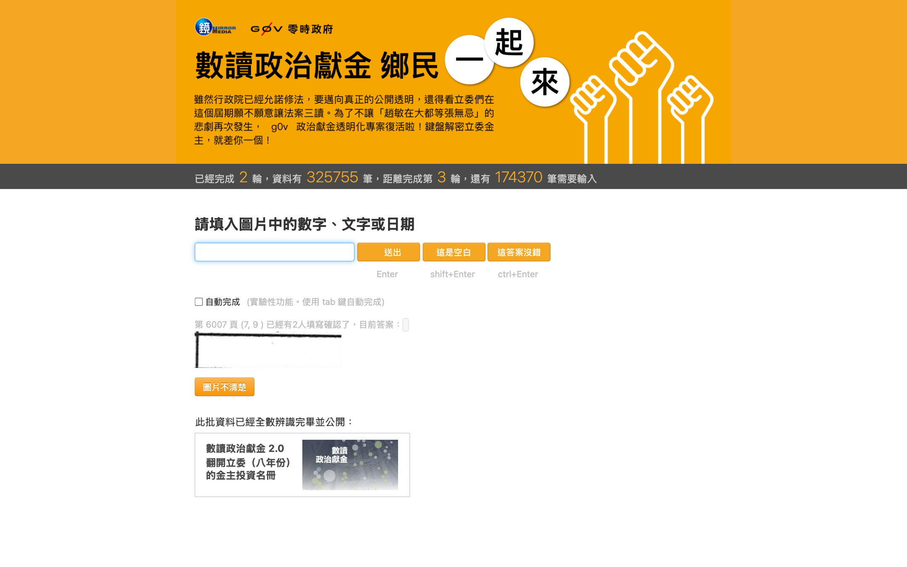
誰捐錢給誰？
政治獻金數位化
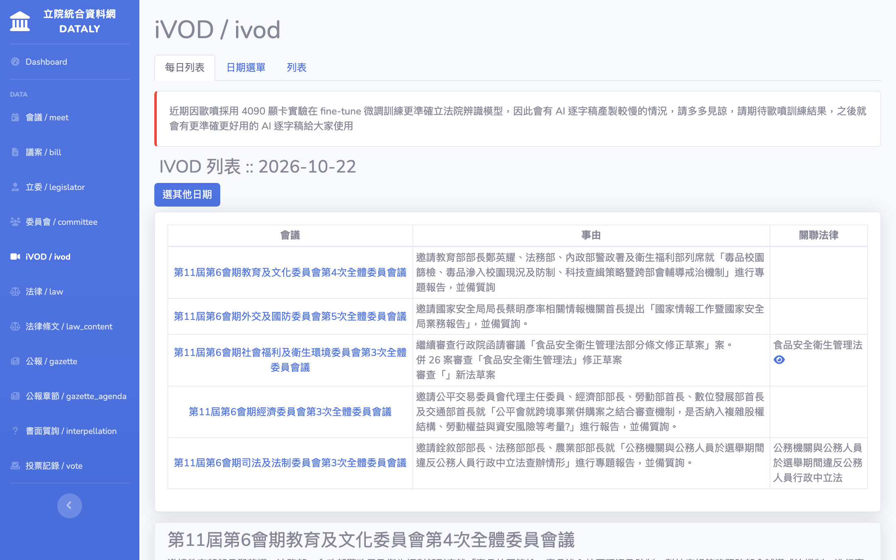
國會在說什麼？
立法院 AI 逐字稿
公民科技是什麼
用科技，讓公共的事
看得懂、參與得到
Disfactory
看到農地上的違章工廠，拍照回報
Cofacts 真的假的
LINE 收到可疑訊息，轉給機器人查
萌典
國語、台語、客語的線上辭典
誰在做
g0v 零時政府
- 一群志工組成的公民科技社群
- 定期辦黑客松，大家叫它「大松」
- 揪松團：幫大家揪人、辦活動、整理資料
想參與的人，會卡在哪裡？
某個議題，以前有人做過什麼？
議題分類，每個專案一頁
知道名字，不知道它在幹嘛
AI insight：四行講清楚
有什麼資源？去哪裡討論？
「討論在哪裡」＋行動指引
寫了沒人更新，錯了沒人改
資料自動流動，誰都能修
所以 civictech.tw 做了這些事
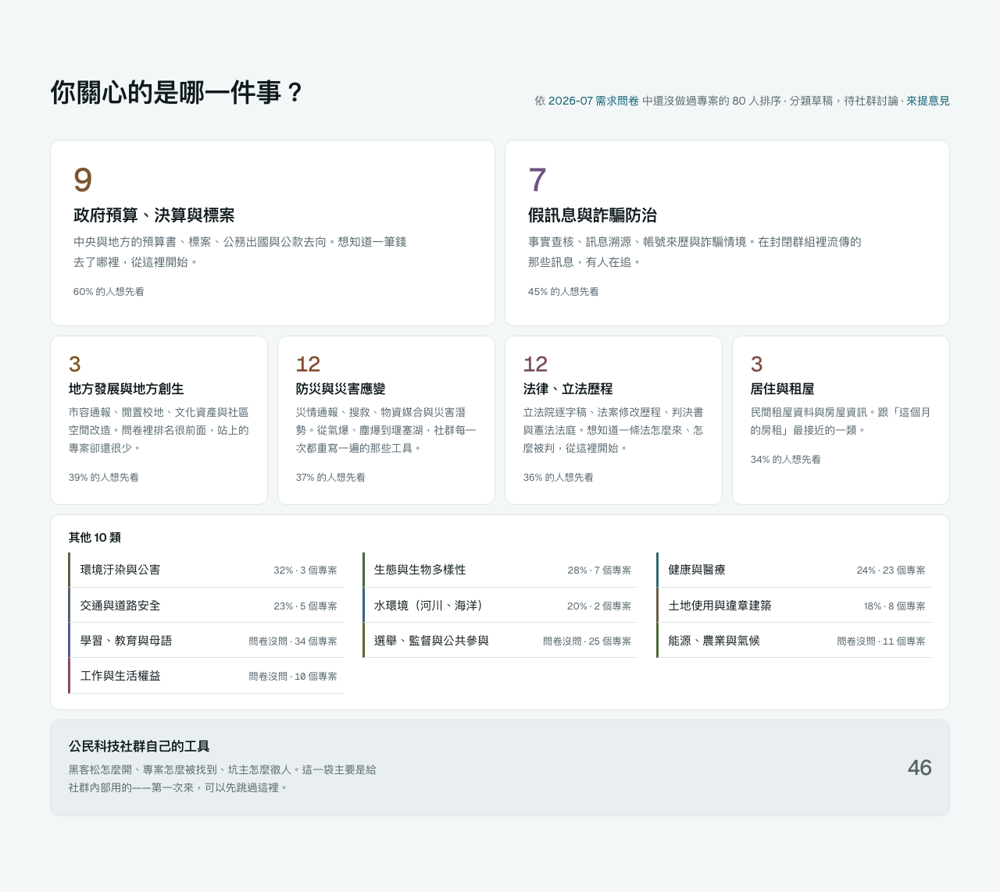


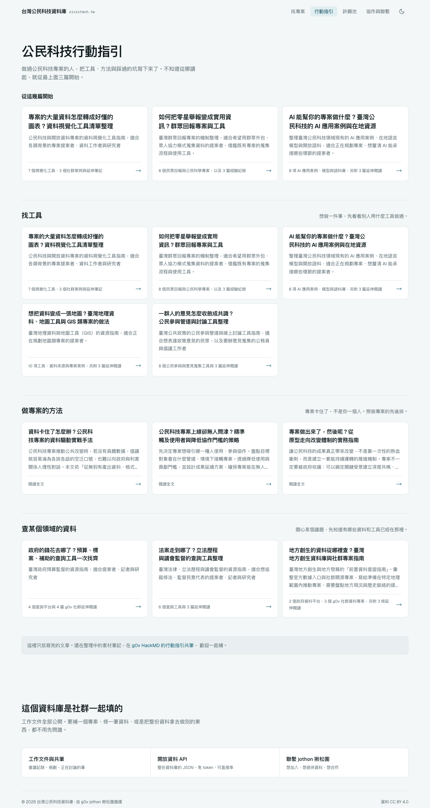
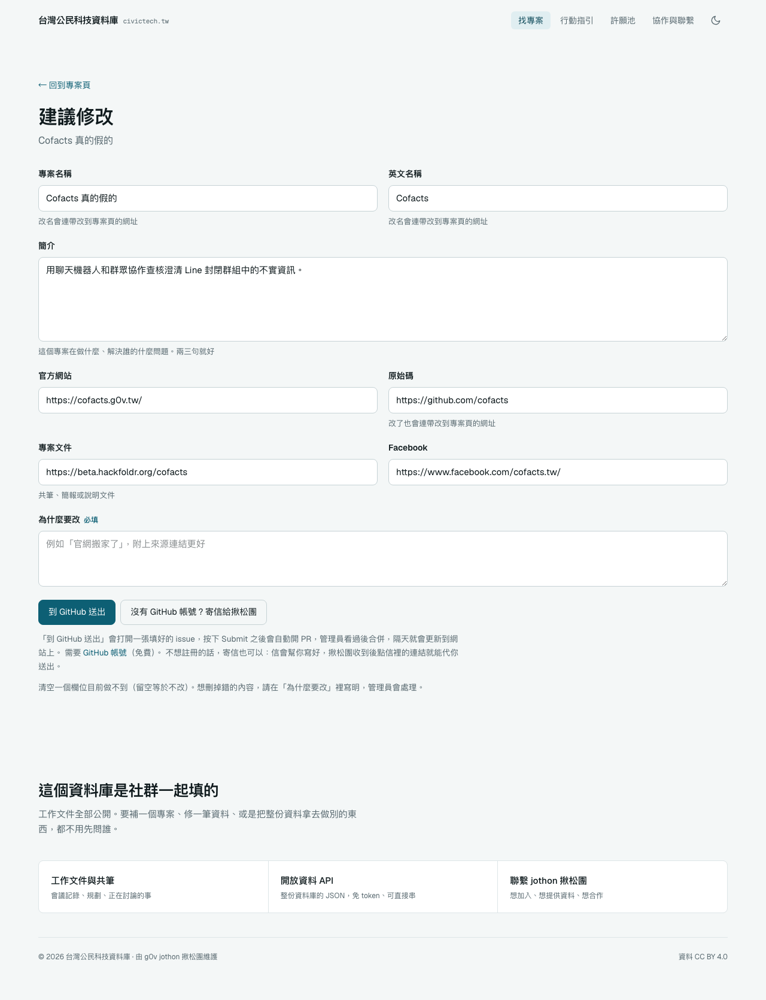
為什麼網頁
長這樣？
痛點 ① 找不到：某個議題，以前有人做過什麼？
以前怎麼找
- 聽朋友說
- 去黑客松現場聽提案
- 翻共筆、翻 Slack 舊訊息
現在怎麼找
直接問 Google、問 AI
那 AI 的答案，是從哪裡讀來的？
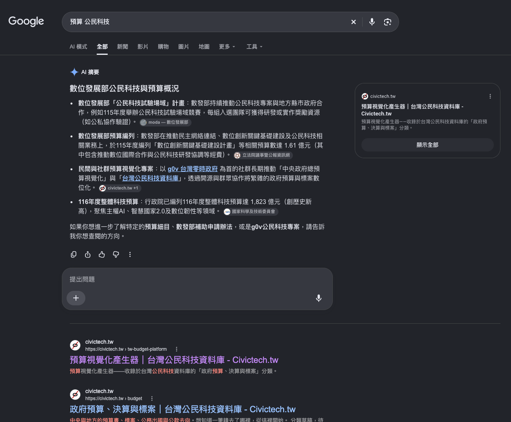
找得到：兩步就到
選議題，
就看到專案
- 首頁：17 個議題，照大家最想看的排
- 議題頁：這一類所有的專案
- 每個專案都有自己一頁、自己的網址
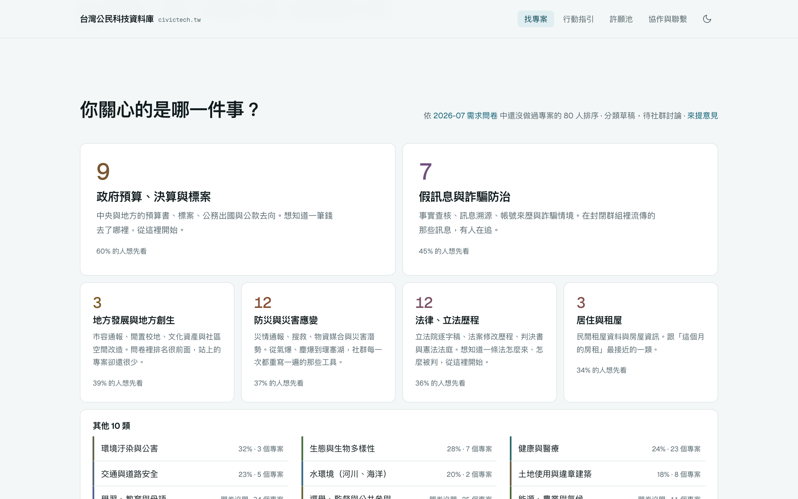
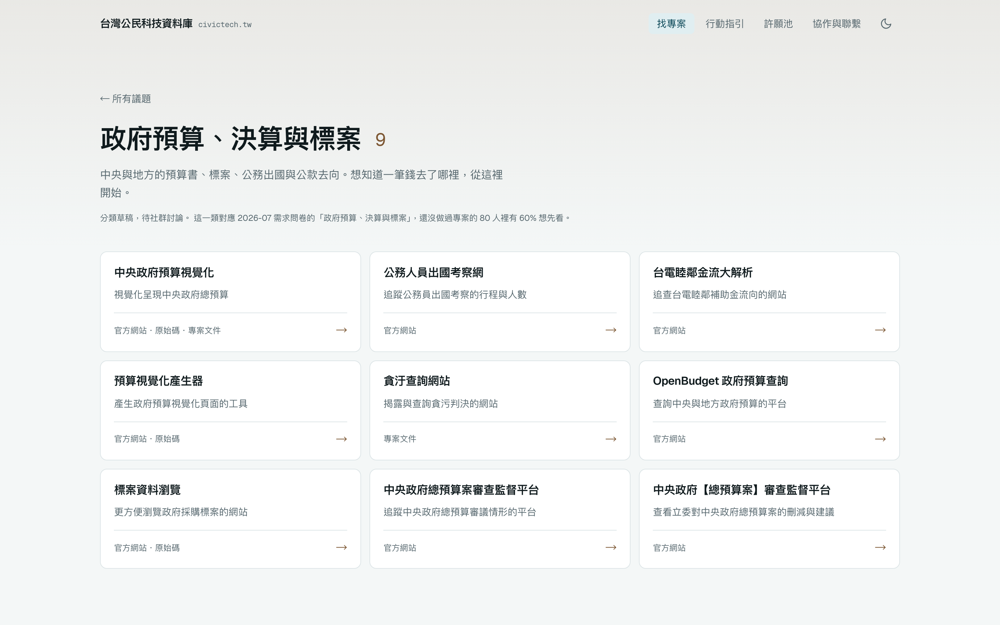
設計 ① 這是給誰用的？
給「要去揪新手的那個人」
不是新手本人。
他需要的是：一個連結，丟給朋友就好
設計 ② 分類要怎麼分？
照「人想知道什麼」來分
專案在做什麼
照 SDGs 影響力類別
「終結貧窮」「消除不平等」…
人想先看什麼
照 2026-07 需求問卷
127 人填答的 12 個議題
想先看的人 vs 實際有的專案
首頁就照這個順序排。只算「還沒做過專案」的 80 人。
分類空著，不是 bug
是「需求高、
做的人少」的訊號
→ 這就是在座各位的機會
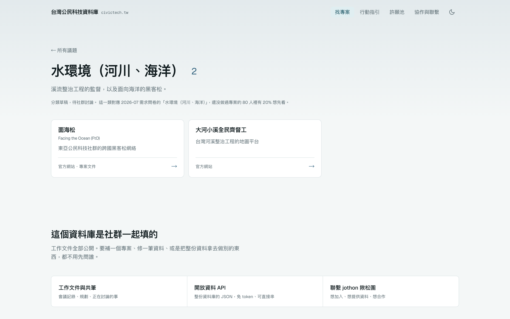
設計 ③ 想自己動手呢？
行動指引，
搬回站內
- 11 篇全文，照用途分組
- 以前全是外連共筆，人讀到一半就跑了
- 搜尋引擎和 AI 也讀不到

設計 ④ 怎麼讓人想多逛一下？
幾個小設計
許願池
說出你希望有人做的工具
隨機挑一個
每次打開，推薦不一樣的專案
深色模式
晚上滑手機也不刺眼
為什麼需要
AI insight？
痛點 ②③ 看不懂、找不到人
先看看原本的專案簡介
230 筆資料裡，將近一半讀不出它在做什麼
四行，每個專案都一樣
放在專案頁上
第一眼
就看得懂
原本的自述還在，
收在下面
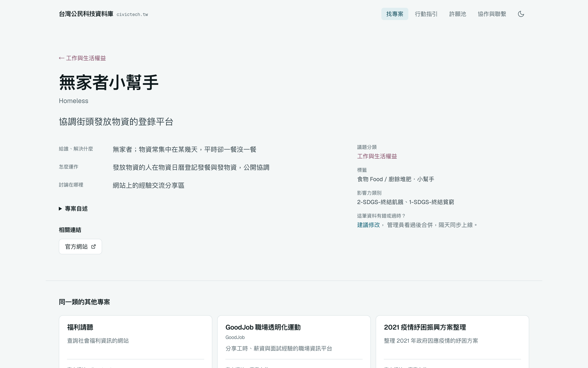
痛點 ③ 找不到人
看完，
知道去哪裡找人
- 點「討論在哪裡」
- 看過去的討論：免登入
- 或直接加入 g0v Slack
寫一次，三種讀者
一份內容，三個用途
逛網站的你
十秒看懂一個專案
Google 讀得到
有人搜「預算視覺化」就找得到
丟給 NotebookLM
直接問「我關心居住，有哪些專案？」
所以品質要照最嚴格的那個來
AI 不偏心
每個專案，篇幅都差不多
原本的簡介：最長的 10% 專案，佔掉一半篇幅
AI insight：每行限字數，前 10% 只佔 14%
230 個專案由長到短排列，各自用自己的比例尺。每行上限：做什麼 25 字，其他三行各 40 字
AI 寫，人可以查
每一筆都記下來源
- 記下參考的網址，優先用網頁封存版
- 記下哪天、用哪個模型產生
- 寫不出來就寫「不明」，不硬掰
- 看到錯了，專案頁上可以建議修改
資料可以
怎麼加值？
痛點 ④ 資料會舊：寫了沒人更新，錯了沒人改
一份資料，一直在流動
拿得走
開放資料 API
https://data.civictech.tw/v0/tech/projects.json- 整份資料庫，就是幾個 JSON 檔
- 不用申請、不用 token，直接拿
- 每天凌晨 4 點自動同步，同步結果公開
放得回
錯了，誰都能改
- 專案頁按「建議修改」
- 直接在表單上改，寫一句為什麼
- 到 GitHub 送出，或寄信給揪松團
- 自動變成一份修改申請
- 管理員看過，合併，寫回後台
- 隔天同步，網站就更新了
資料整理好，自己會說話
掃了 199 個專案、307 個網址
從第 4 次大松到現在，每個專案怎麼長出來的
你可以拿它做什麼
三個點子
問 AI
把資料丟進 NotebookLM，問「我住花蓮，有什麼專案能參與？」
找空格
挑一個需求高、專案少的議題，當你的提案題目
救專案
從失效名單裡，找一個值得復活的專案
今天回家，做一件事就好
逛一個議題
挑你最在意的那一類
許一個願
你希望有人做什麼工具？
加入一個專案
點「討論在哪裡」，打聲招呼
civictech.tw
謝謝大家